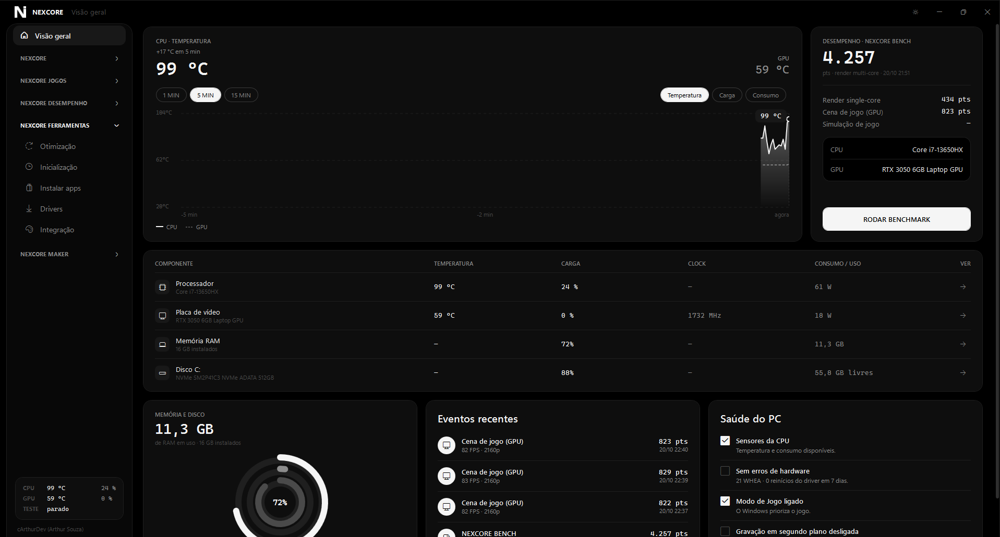

Projeto em destaqueC# · .NET 8 · WPF
ver no GitHub
NEXCORE
Diagnóstico, desempenho e controle do PC Windows em um só lugar. Informações de hardware, sensores em tempo real, benchmarks, testes de estresse e ferramentas para jogos e otimização.